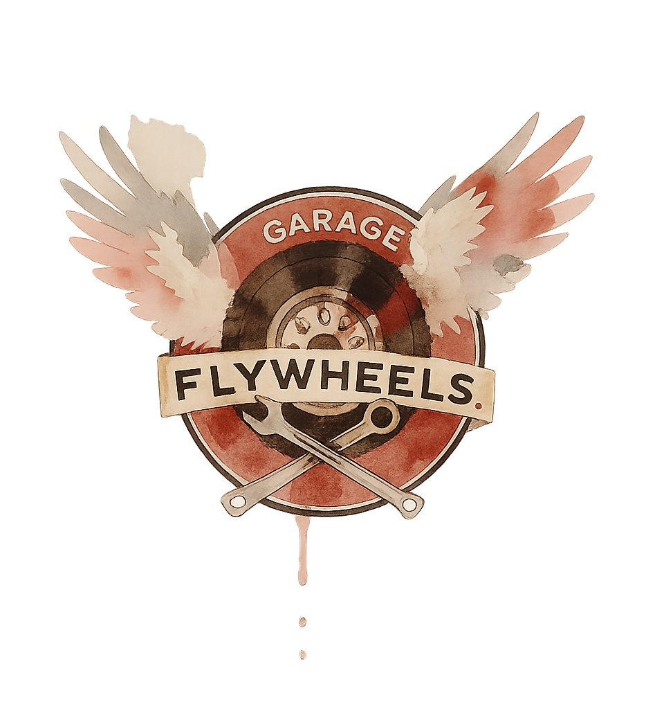

Bienvenue chez Fly Wheels,
Votre garage spécialisé en custom et
dépannage automobile à Los Santos !
Situé sur la Route 68 ou près du célèbre Dinner Rex et à quelques minutes de Sandy Shores, Fly Wheels est votre partenaire de confiance pour tous vos besoins automobiles. Nous sommes spécialisés dans la réparation et la personnalisation de véhicules custom, et nous proposons également un service de dépannage extérieur rapide et efficace pour que vous puissiez reprendre la route sans stress.
Chez Fly Wheels, nous allions passion, savoir-faire et réactivité pour offrir à chaque client un service sur mesure. Que vous ayez besoin d’une réparation mécanique, d’une modification esthétique ou d’une assistance en urgence, notre équipe est là pour vous accompagner.
Fly Wheels – L’endroit où vos véhicules retrouvent puissance, style et performance !
Contactez-nous